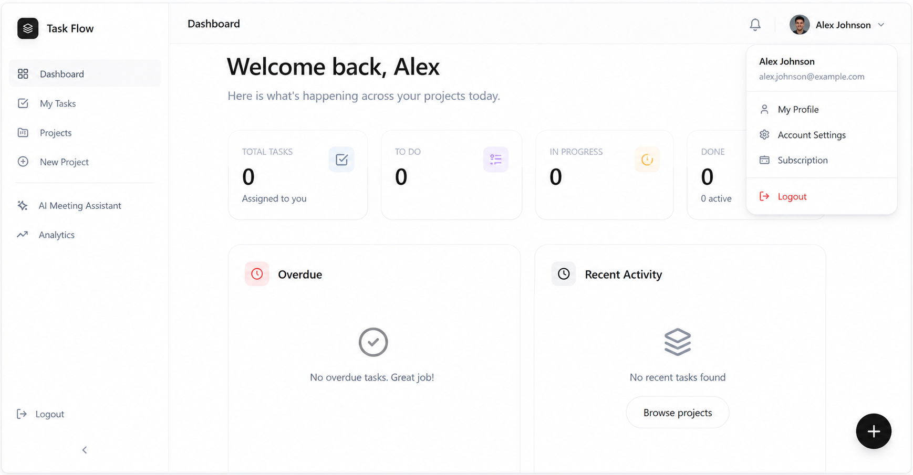
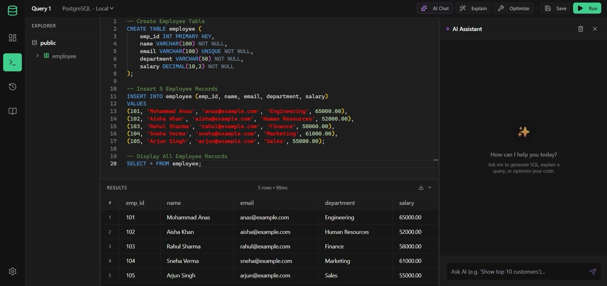

Task Flow
Full-stack collaboration platform with project management, role-based permissions, analytics dashboard and production deployment.
- React + Node.js
- JWT Authentication
- Project Analytics
- Role Management
- PostgreSQL Database

Computer Science Engineer specializing in Backend Development, distributed systems and database-driven applications. Experienced with Node.js, PostgreSQL, Redis, Docker and scalable API architecture, with hands-on project and industry simulation experience.
I'm Mohammad Anas, a Backend Engineer specializing in building scalable APIs, secure authentication systems, and production-grade web applications. My passion lies in solving real-world problems through clean architecture, efficient code, and reliable software engineering practices.
Over the past few years, I've worked on projects involving role-based access control (RBAC), JWT authentication, Redis caching, PostgreSQL database design, and Dockerized deployments. I enjoy building systems that not only work today but can scale effectively as products grow.
My technical foundation includes Data Structures & Algorithms, DBMS, Operating Systems, and Computer Networks, allowing me to approach software development with both practical and theoretical understanding. I believe great engineering comes from balancing performance, maintainability, and user needs.
When I'm not building projects, you'll find me exploring system design concepts, learning cloud technologies, improving my problem-solving skills, and staying up-to-date with modern backend development practices.
Full-stack collaboration platform with project management, role-based permissions, analytics dashboard and production deployment.

Modern web-based SQL Integrated Development Environment (IDE) enabling real-time query execution, live schema exploration, and comprehensive query execution history.

 Node.js
Node.js
 Express.js
Express.js
 REST APIs
REST APIs
 JWT
JWT
 PostgreSQL
PostgreSQL
 Prisma ORM
Prisma ORM
 Redis
Redis
 MongoDB
MongoDB
 React
React
 JavaScript
JavaScript
 HTML
HTML
 CSS
CSS
 Tailwind CSS
Tailwind CSS
 Next.js
Next.js
 Docker
Docker
 Git
Git
 GitHub
GitHub
 Postman
Postman
Jamia Hamdard, New Delhi, India
Udemy
takeUforward
HackerRank
Forage
Forage • June 2026